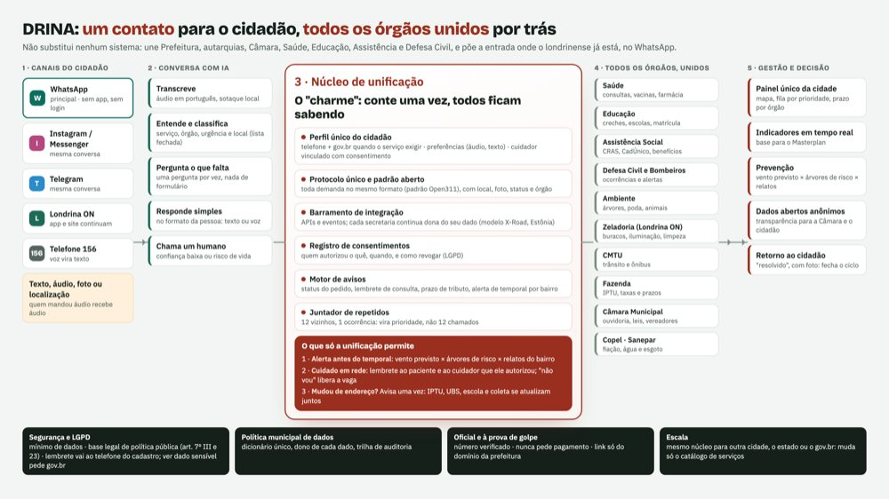
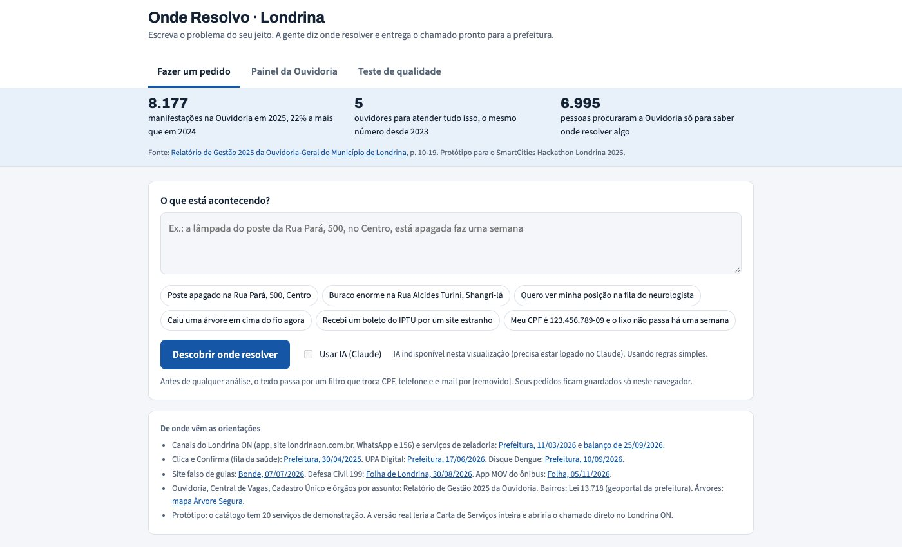

DRINA: 3º lugar no SmartCities Hackathon
Toda a prefeitura num só contato de WhatsApp: o cidadão conta uma vez, por texto ou áudio, e todos os órgãos certos ficam sabendo.

O problema
Quem mais precisa da prefeitura (idosos, quem tem pouco tempo) não vai baixar oito aplicativos. E cada órgão recebe o mesmo problema várias vezes, sem saber que outro já recebeu.
A proposta
Um contato só, no canal que a pessoa já usa. A IA transcreve, classifica e pergunta o que falta; um núcleo de unificação junta relatos repetidos, avisa todos os órgãos envolvidos e devolve o status. O mapa do briefing reaproveita os dados do Árvore Segura.
Onde Resolvo (protótipo funcional)
O morador descreve o problema com as próprias palavras. Antes de qualquer análise, um filtro troca CPF, telefone e e-mail por [removido]. Depois um classificador indica um entre 20 serviços. A versão só com regras acertou 13 de 20 frases novas (65%); a versão com IA fica como opção.
Imagens


Meu papel
O pitch, o briefing e os scripts que geram as imagens do briefing.
O protótipo Onde Resolvo foi construído com IA sob a minha direção.
O que falta
É uma proposta de hackathon: não há integração real com os sistemas da prefeitura.